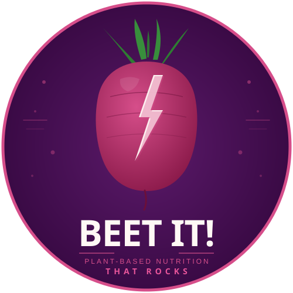
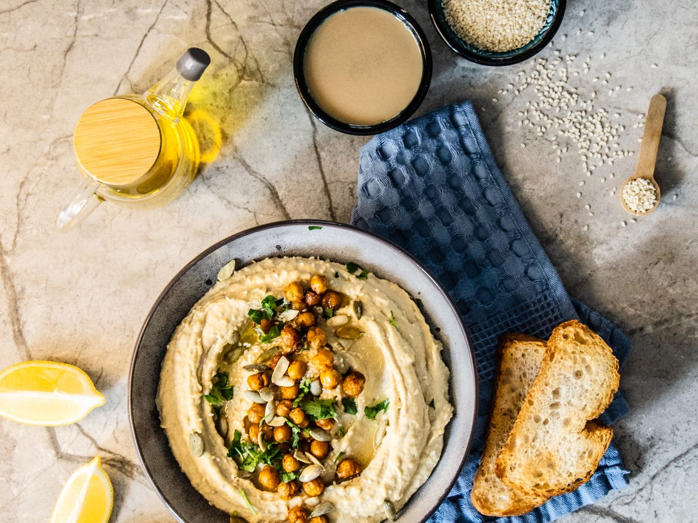
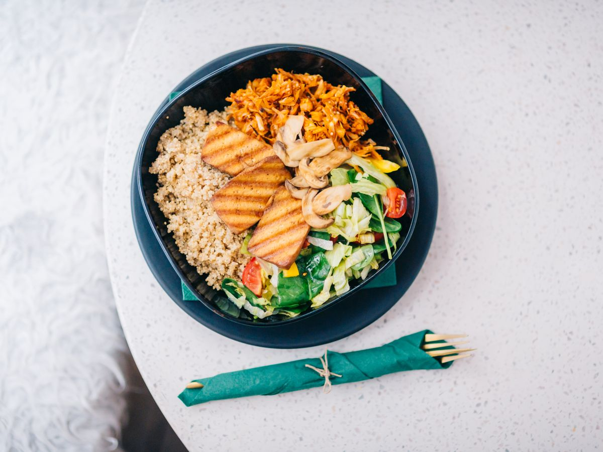
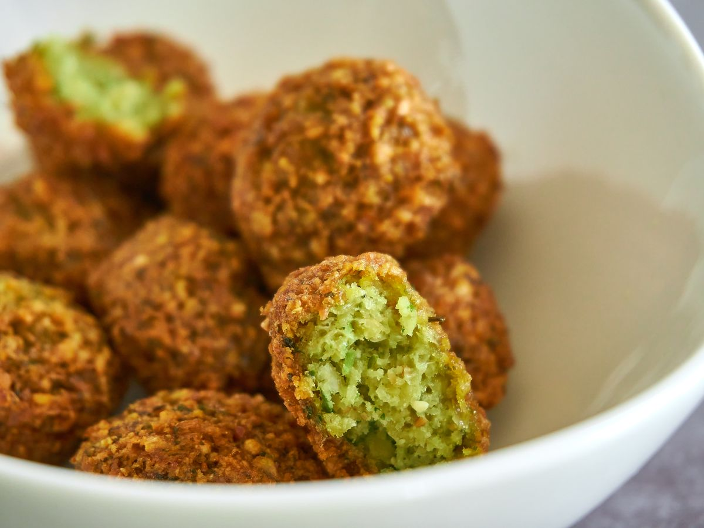
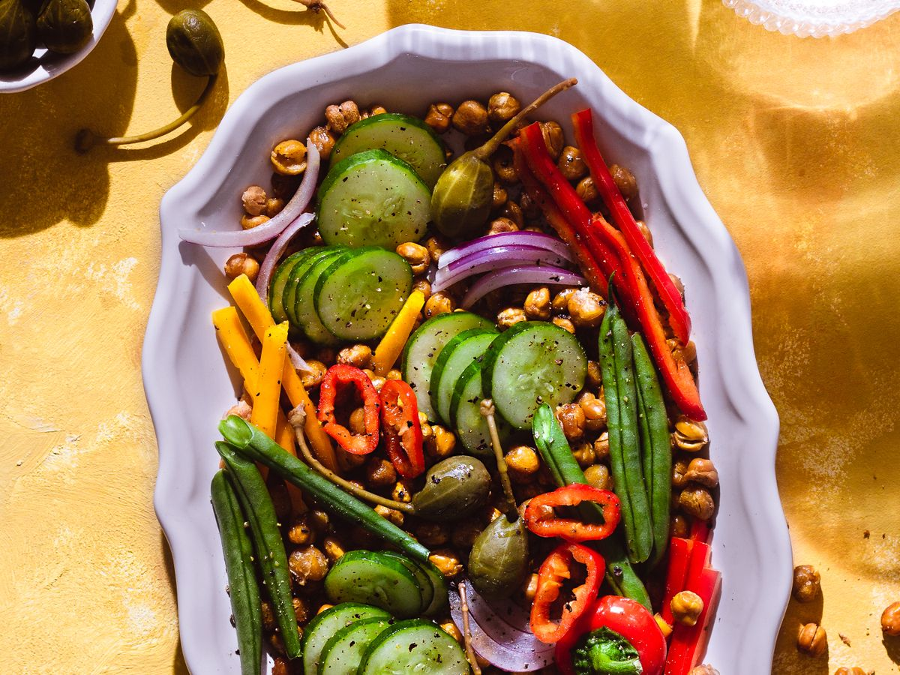

Beet-It Prenota una consulenzaImporta ricette dai social e veganizzale in un tocco, pianifica i pasti della settimana e fatti seguire da un nutrizionista specializzato in alimentazione vegetale. Tutto in un'unica app.
Vedi un reel goloso su Facebook, Instagram, TikTok o YouTube? Condividilo con Beet-It: l'app legge la ricetta, la veganizza automaticamente e la organizza con ingredienti, procedimento e foto — senza login e senza copia-incolla.

Il piano automatico compone pranzi e cene veri: piatti unici oppure combinazioni bilanciate (antipasto, primo, secondo), con dessert opzionale. Filtri per allergeni, low-carb, senza glutine e tetto calorico giornaliero — calcolato a porzione.

Non sai cosa cucinare? Lo Chef AI inventa ricette vegetali su misura partendo dagli ingredienti che hai in casa e dalle tue preferenze (veloce, proteica, leggera, senza glutine…), complete di valori nutrizionali e impatto ambientale.

Aggiungi gli alimenti con una foto (li riconosce l'AI) o scansionando il codice a barre. Dal piano della settimana Beet-It genera la lista della spesa aggregando gli ingredienti, così non compri due volte la stessa cosa.

Le consulenze sono tenute da Manuela Manzo. Analisi personalizzata, piano alimentare su misura integrato con le ricette che salvi in Beet-It, e follow-up per adattare il percorso ai tuoi progressi. Comodamente in videochiamata.
Scegliere piatti vegetali è una delle azioni più efficaci per ridurre la propria impronta di carbonio. Beet-It stima il risparmio di CO₂ di ogni ricetta veganizzata e te lo mostra in modo semplice — per rendere concreto l'effetto delle tue scelte a tavola.
È la riduzione fino a cui può arrivare l'impronta di gas serra della dieta passando a un'alimentazione a base vegetale. Fonte: Nature Food, 2023.
L'app è attualmente in beta su TestFlight e in arrivo su App Store e Google Play. Vuoi provarla in anteprima o essere avvisato al lancio? Scrivici.